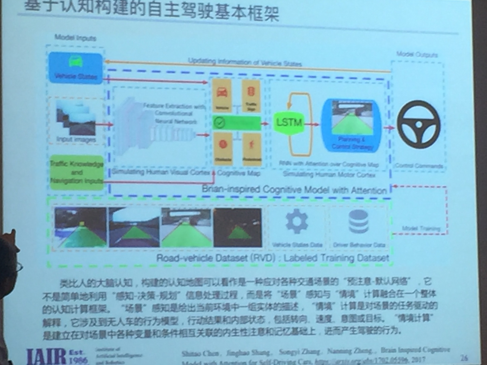
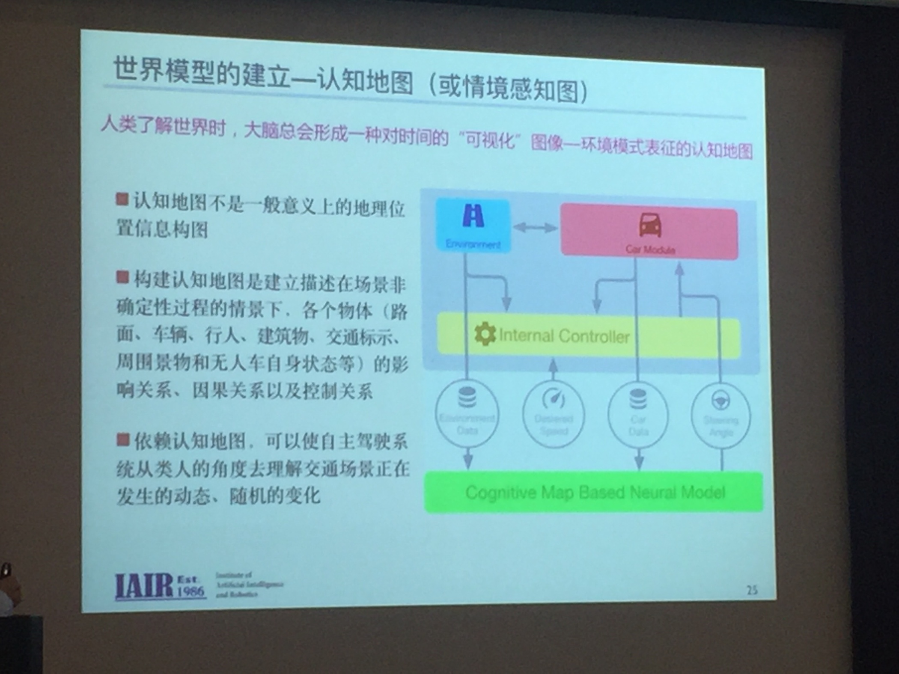
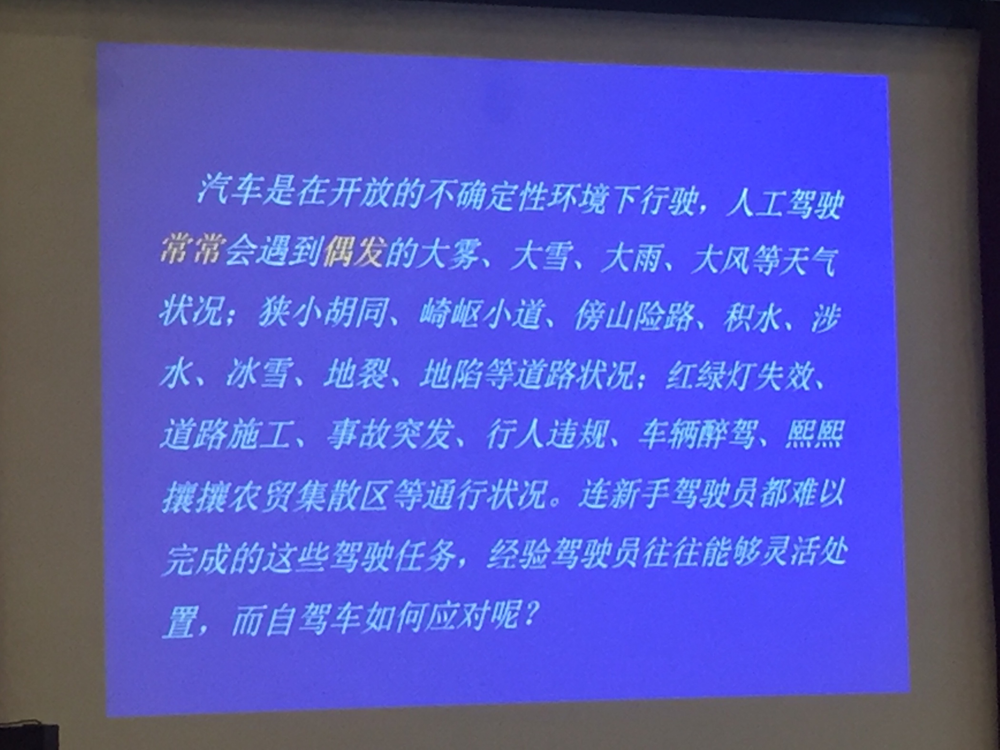
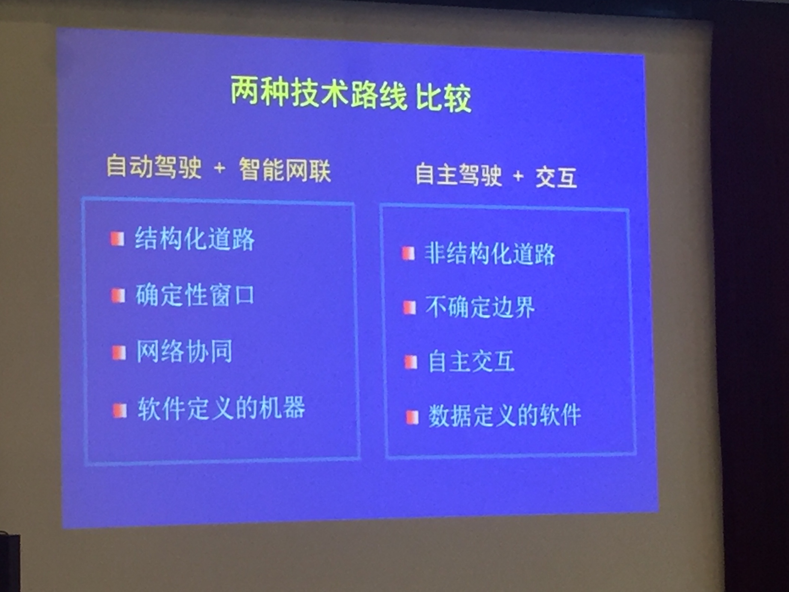
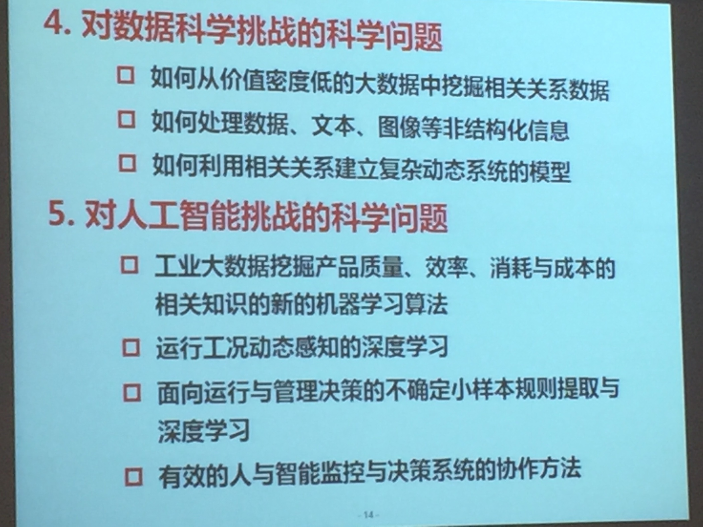

Sunday, 7 May 2017, 9:31 AM GMT+8
中山北二路1156号, 上海市, 上海市, 中国
人工智能研究院成立
人工智能理事会？
新工业革命？
郑南宁 自主车（西交人工智能与机器人研究所）
1 感知周边环境
2 意外遭遇 孩子闯上路 交警
3 网络安全 车联网，黑客控车
如今架构存在缺陷
情景计算 记忆推理
从人脑认知计算角度入手到技术层面
视觉局部竞争，全局优先？
机器实现：先验信息的概率模型，构建世界模型（你说苹果，我脑中闪过汉字


要闭环框架非串性
建立大规模真实交通数据集
迈向新方法
无人车来大车库要和无人接整合
问题定清楚了，再方法层面
李德毅lidy@cae.cn
adas
英国无离合器
特斯拉出事故？
汽车自驾碰到自动化天花板
自动泊车是噱头m k
谁转乒乓球多，谁驾驶停车好
自动驾驶亦或是陷阱

要释放认知，驾驶脑 感知 认知 行动
要会交互

adas
最后成为轮子机器人？
柴天佑 东北大学
离散工业和流程工业
个性定制化，高效化，绿色化
人工智能根在决策，从控制开始，控制用数学，如今用大数据决策，深度学习
计算机，不会被数学束缚，胆子大
CPS，要循环的生产路线，3C+物理实体

产品质量预测，不要完了才知道
华科
工融机器人，与环境 与人，互相
软的，与人更好贴
智能制造
![]()
![]()
![]()